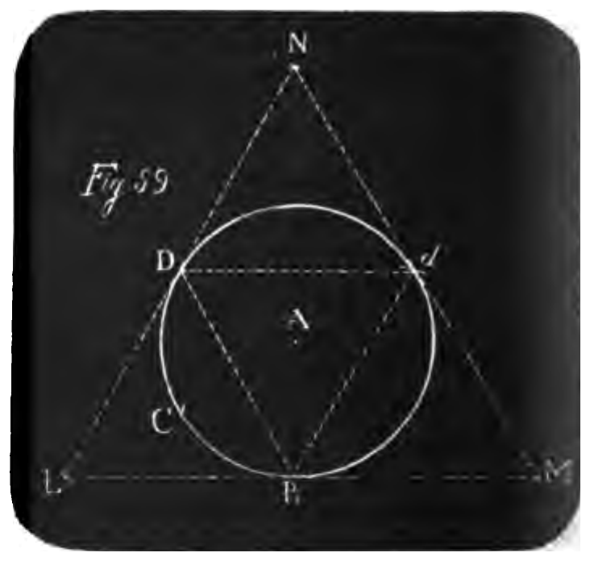

§§ 128–134: Poligoni regolari inscritti e circoscritti al cerchio (Fig. 59–62)¶
128. Prob. Iscrivere ad un cerchio dato un poligono regolare tra quelli, che si possono iscrivere ad esso col compasso e colla riga.
Sol. Si divida la circonferenza in un numero di parti eguali al numero de’ lati del poligono, che si vuole (§§ 27, 29, 30, 31, 32, 38, 40, 41, 42, 53, 57, 60, 63). I punti della divisione saranno i vertici del poligono regolare cercato (§ 124), e le corde degli archi saranno i lati.
Dim. Tutti i lati sono eguali, perchè sono corde di archi eguali. Anche gli angoli sono eguali, poichè essendo alla circonferenza insistono ad un egual numero di archi eguali (21, lib. III). Dunque si ha un poligono regolare del numero che si voleva di lati iscritto al cerchio (def. 1ª, lib. III).
129. Essendo 240 le parti (§ 57), nelle quali con tre punti soli presi fuori della circonferenza si può dividere essa
f. 0096 · p. 71circonferenza con sei aperture di compasso al più (§ 59); tanti saranno i poligoni regolari, che con questi tre punti, e sei aperture di compasso si potranno iscrivere al cerchio, quanti sono i diversi numeri, che dividono esattamente il 240. Ora questi numeri sono i seguenti 2, 3, 4, 5, 6, 8, 10, 12, 15, 16, 20, 24, 30, 40, 48, 60, 80, 120, 240. Dunque omettendo il 2, si potrà iscrivere un poligono regolare di 3 lati, di 4 lati, di 5, di 6, di 8, di 10, ecc., fino al poligono di 240 lati.
130. Se il numero dei lati del poligono che si vuole, si trova essere uno di quelli, pei quali si è divisa la circonferenza ai §§ 27, 30 e seguenti, per esempio il 12, si divida la circonferenza in 12 parti eguali (§ 31); i due punti estremi di ciascuna di queste saranno ai vertici degli angoli del poligono che si vuole iscrivere; ossia, ciò che è lo stesso, le corde di questi archi saranno i lati del poligono.
Se il numero dei lati del poligono che si vuole, non si trovasse espressamente nei Problemi del Libro secondo: come per esempio se si volesse costruire un poligono di sessanta lati; si duplichi, si triplichi o si quadruplichi, ecc. questo numero, finchè si arrivi ad avere uno dei numeri, che si contengano espressamente nei Problemi; nell’esempio addotto si duplichi il 60, e si avrà 120; il qual numero si trova espressamente al § 42, dove si dà il modo di dividere la circonferenza in 120 parti eguali. Queste parti prendendole a due a due ci somministreranno 60 archi eguali; le corde dei quali saranno i 60 lati del poligono che si voleva. Se si avesse dovuto triplicare il numero, come nel caso, che si fosse voluto un poligono di 16 lati; divisa allora la circonferenza in 48 parti (§ 38), numero triplo del 16, si dovranno prendere tre di questi archi per avere un arco, che sia la sedicesima parte della circonferenza; ognuno di questi archi eguali avrà per corda un lato del poligono di sedici lati ed angoli.
131. Prob. Ad un cerchio dato \(BCDd\) (fig. 59) circoscrivere un triangolo equilatero (§ 124).
Sol. Si faccia al raggio di questo cerchio \(AB = BC = CD\); a \(BD = BL = DL = Dd = DN = dN = dM = BM\).
I tre punti \(L, M, N\) saranno i vertici del triangolo equilatero circoscritto al cerchio.


Dim. Il triangolo \(BDd\) è equilatero iscritto al cerchio (§§ 29 e 131). Ai lati di questo hanno eguali i lati i triangoli \(DLB\), \(NDd\), \(dBM\); dunque saranno eguali i loro angoli (8, lib. I). Perciò i tre angoli \(NDd\), \(dDB\), \(BDL\) saranno eguali ai tre angoli del triangolo iscritto, cioè a due retti (32, lib. I). Quindi la \(NDL\) sarà retta (14, lib. I). Lo stesso si dimostrerà delle altre due \(LBM\), \(NdM\). Saranno poi ciascuna di esse dupla del lato \(BD\), dunque eguali tra loro. Dunque il triangolo \(LMN\) è equilatero. Essendo poi gli angoli \(NDd\), \(DLB\) eguali, sarà la \(Dd\) parallela alla \(LB\) (29, lib. I), ossia alla \(LM\). Ora i punti \(N, A, B\) sono in una retta perpendicolare alla \(Dd\) (§§ 13 e 14). Dunque la \(AB\) è perpendicolare anche alla \(LM\) (27, lib. I). Dunque la \(LM\) è tangente del cerchio (16, lib. III). Lo stesso si dimostrerà delle due \(NL\), \(NM\). Dunque il triangolo \(NLM\) è equilatero circoscritto al cerchio (def. 2ª, lib. IV).
132. Prob. Ad un dato cerchio (fig. 60) circoscrivere un quadrato.
Sol. Si divida la sua circonferenza in quattro parti eguali nei punti \(B, F, E, f\) (§ 27). Con questi punti presi per centri, e col raggio \(AB\) si segnino degli archi, che si taglino in \(R, S, T, V\). Saranno questi ultimi quattro punti i vertici del quadrato circoscritto al cerchio.

Dim. L’angolo \(TBA\) è retto (§ 100). Nella stessa guisa si dimostra essere retto l’angolo \(SBA\). Dunque \(TBS\) è una retta (14, lib. I) perpendicolare
f. 0098 · p. 73al diametro \(BE\), e però tangente al cerchio (16, lib. III). Lo stesso si dimostra delle altre \(TFV\), \(VER\), \(RfS\). Avendo poi il triangolo \(BFT\) i lati eguali rispettivamente ai lati del triangolo \(BFA\); sarà l’angolo \(BTF = BAF\) (8, lib. I); quindi retto (§ 27). Lo stesso si dimostra degli altri angoli \(V, R, S\). Dunque ecc.
133. Ad un dato cerchio circoscrivere un pentagono regolare.
Sol. Sia il cerchio \(BDE\) descritto col raggio \(AB\) (fig. 61). Si divida la sua circonferenza in cinque parti eguali (§ 40) nei punti \(B, C, D, E, F\). Fatto centro in uno di questi punti \(C\), col raggio \(CB\) si descriva la semicirconferenza \(BDP\) (§ 64). Preso per centro il punto \(E\) opposto all’arco \(CB\), col raggio \(EC\) si tagli l’arco \(BDP\) in \(p\). Col raggio \(Pp\), e coi centri \(B, C, D, E, F\) si segnino degli archi, che si taglino in \(b, c, d, e, f\). Saranno questi ultimi punti i vertici degli angoli del pentagono circoscritto al cerchio.
Per dimostrazione di questo Problema servirà la dimostrazione del seguente.

134. Prob. Dati i vertici d’un poligono regolare iscritto al cerchio (fig. 62); trovare i vertici d’un simile poligono regolare circoscritto.

Sol. Sieno i punti \(B, C, D, E\), ecc. vertici del poligono iscritto al cerchio. Con uno di essi \(C\) preso per centro, e colla distanza di due d’essi \(CB\) presa per raggio si descriva la semicirconferenza \(BDP\) (§ 64). Coi centri \(B\) e \(C\), e col raggio \(BD\) si segnino due archi, che si taglino in \(V\). (Nel caso del pentagono (fig. 61) il punto \(V\) coincide col punto \(E\)). Con questo stesso raggio \(BD\), e col centro \(V\) si tagli la circonferenza \(BDP\) in \(p\). Col raggio \(Pp\), e coi centri \(B, C, D, E\), ecc. vertici dell’inscritto si
f. 0099 · p. 74descrivano degli archi, che si taglino nei punti \(b, c, d, e\), ecc. Questi saranno i vertici del poligono regolare circoscritto.
Dim. Pel § 22 si ha \(pP \cdot VC = (CD)^2\), cioè \(cC \cdot BD = (BC)^2\). Quindi (17, lib. VI) \(BD : BC :: BC : Cc\). Ma \(BC = CD\) e \(Bc = cC\). Dunque nei due triangoli isosceli \(BCD\), \(BcC\) tutti i lati saranno proporzionali. Dunque (5, lib. VI) sarà l’angolo \(cCB = CBD\). Quindi le due \(cC\), \(BD\) saranno parallele (28, lib. I). Nella stessa guisa si proverà, che alla stessa \(BD\) è parallela anche la \(Cd\). Saranno dunque i punti \(c, C, d\) nella stessa retta. Ma per essere \(BC = CD\), il raggio \(AC\) è perpendicolare alla \(BD\) (§ 14). Dunque anche alla \(cd\) (29, lib. I). Dunque la \(cd\) è tangente (16, lib. III) alla sua metà in \(C\). Lo stesso si dimostra della \(de = cd\) nella sua metà in \(D\), e così delle altre. Saranno poi queste tante di numero, quanti sono i punti \(B, C, D, E\), ecc. Dunque ecc. (def. 2ª, lib. IV).